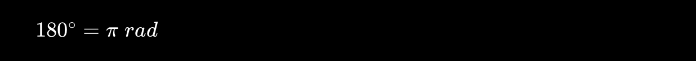
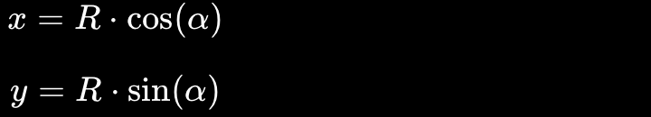
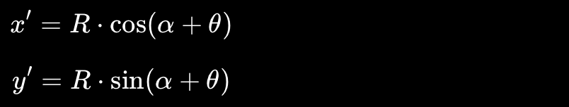
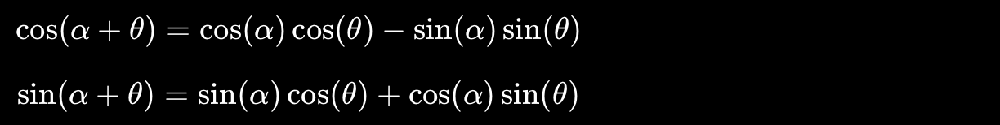
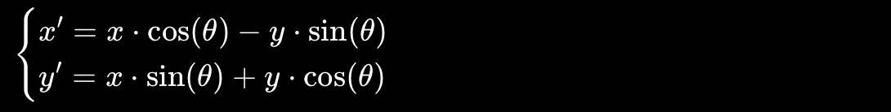

Seno
La funzione seno descrive un andamento ondulatorio che oscilla continuamente tra −1 e 1. È una funzione periodica, cioè ripete sempre lo stesso andamento dopo un intervallo di 2π, e passa per l’origine degli assi cartesiani.
Un percorso semplice e visivo per comprendere triangoli, funzioni e grafici in modo chiaro.
La trigonometria, dal greco antico τρίγωνον, trígonon ("triangolo") e μέτροun, métron ("misura"), quindi 'risoluzione del triangolo', è la parte della matematica che studia i triangoli, a partire dai loro angoli. Il compito principale della trigonometria consiste nel calcolare le misure che caratterizzano gli elementi di un triangolo (lati, angoli, mediane ecc.) partendo da altre misure già note (almeno tre, di cui almeno una lunghezza), per mezzo di speciali funzioni.
La trigonometria non è nata come un esercizio astratto di matematica pura, ma come uno strumento pratico ed essenziale per l'astronomia e la navigazione. La necessità di misurare ciò che era fisicamente inaccessibile ha spinto l'umanità a scoprire le relazioni segrete tra gli angoli e i lati dei triangoli.
Il cuore della trigonometria è il triangolo rettangolo, un triangolo caratterizzato dalla presenza di un angolo retto di 90°. I suoi lati prendono il nome di cateti, mentre il lato opposto all’angolo retto è chiamato ipotenusa. A partire da un angolo θ, la trigonometria studia le relazioni tra i lati del triangolo attraverso tre rapporti fondamentali: il seno, il coseno e la tangente, definiti come segue:

La trigonometria è strettamente legata al teorema di Pitagora, perché tutte le relazioni tra i lati del triangolo rettangolo dipendono da questa fondamentale regola geometrica. Il teorema afferma che, in un triangolo rettangolo, la somma dei quadrati dei due cateti è uguale al quadrato dell’ipotenusa.

Grazie a questa relazione è possibile calcolare la lunghezza di un lato conoscendo gli altri due, ma anche comprendere i rapporti trigonometrici. Infatti seno, coseno e tangente derivano proprio dai rapporti tra i lati del triangolo rettangolo, che rispettano sempre il teorema di Pitagora.
Le funzioni trigonometriche sono strumenti fondamentali della matematica e permettono di studiare il legame tra angoli e misure nel cerchio goniometrico. Le più importanti sono il seno, il coseno e la tangente.
La funzione seno descrive un andamento ondulatorio che oscilla continuamente tra −1 e 1. È una funzione periodica, cioè ripete sempre lo stesso andamento dopo un intervallo di 2π, e passa per l’origine degli assi cartesiani.
La funzione coseno ha un comportamento molto simile al seno, ma con una differenza importante: invece di partire da 0, parte dal valore 1. Anche il coseno oscilla tra −1 e 1 e possiede lo stesso periodo del seno.
La tangente è il rapporto tra il seno e il coseno di un angolo, oppure tra il cateto opposto e il cateto adiacente in un triangolo rettangolo. A differenza di seno e coseno, la tangente può assumere valori arbitrariamente grandi e presenta asintoti verticali quando il coseno si annulla.
Il grafico delle funzioni mostra come questi rapporti si comportano insieme sugli assi cartesiani.
Il cerchio goniometrico è un cerchio di raggio 1 centrato nell’origine del piano cartesiano. Ogni angolo individua un punto preciso sul cerchio e permette di collegare geometria e trigonometria.
Questo significa che:
Grazie al cerchio goniometrico è possibile visualizzare facilmente le principali relazioni trigonometriche e comprendere il comportamento di seno e coseno.
Quando si misura un angolo, si possono usare due unità di misura diverse: i gradi e i radianti. Nella geometria di base si utilizzano soprattutto i gradi, mentre nella trigonometria avanzata e nell’analisi matematica i radianti diventano fondamentali. Il radiante nasce direttamente dal cerchio goniometrico ed è collegato alla lunghezza degli archi del cerchio. Un angolo misura 1 radiante quando intercetta un arco lungo quanto il raggio del cerchio.
La relazione principale tra gradi e radianti è:

L’uso dei radianti rende più semplici molte formule trigonometriche e permette di descrivere in modo più naturale il comportamento delle funzioni seno, coseno e tangente. Per questo motivo, in matematica e fisica i radianti sono spesso preferiti ai gradi.
Una delle applicazioni pratiche più importanti della trigonometria nella programmazione grafica, nello sviluppo di videogiochi e nella robotica è la rotazione dei punti nel piano cartesiano. Ruotare un punto attorno all'origine significa calcolare il seno e il coseno di un nuovo angolo composto (quello vecchio + quello della rotazione). Le formule di addizione sono lo strumento matematico che ti permette di farlo conoscendo solo la posizione di partenza del punto.
Immagina l'origine degli assi (0,0) come il centro di un orologio. Il punto che vuoi ruotare è la punta di una lancetta. Questa lancetta ha due caratteristiche fondamentali:
Grazie alla trigonometria di base, la posizione orizzontale della punta (x) e quella verticale (y) dipendono da questa lancetta:

La lunghezza della lancetta R è rimasta esattamente la stessa (perché girando non si allunga e non si accorcia). L'angolo però è cambiato: adesso l'angolo totale non è più solo α, ma è diventato (α+θ). Quindi, la nuova posizione orizzontale (x′) e la nuova posizione verticale (y′) del punto saranno semplicemente:

Il problema è che noi in partenza non conosciamo l'angolo iniziale α e la lunghezza R, conosciamo solo le coordinate di partenza (x,y) e di quanto vogliamo ruotare (θ). Come facciamo a calcolare le nuove coordinate?
Usiamo le formule di addizione per "smontare" quell'angolo (α+θ) dentro il seno e il coseno:

Se inseriamo queste due identità nelle nostre formule di prima, con un semplice passaggio algebrico, la lunghezza R e l'angolo α spariscono e vengono magicamente rimpiazzati da x e y (le coordinate che già avevamo).
Il risultato finale è questo sistema pulito:

Il secondo grafico rappresenta la rotazione di un punto attorno a un centro arbitrario C(cx,cy), diverso dall’origine degli assi cartesiani. Il punto iniziale P(x,y) ruota attorno a questo centro mantenendo costante la distanza da C, descrivendo quindi una traiettoria circolare. L’angolo di rotazione determina la posizione del punto ruotato P'(x',y'): quando l’angolo aumenta il movimento avviene in senso antiorario, mentre con valori negativi avviene in senso orario.
Le coordinate del punto ruotato vengono calcolate attraverso le formule:
Queste equazioni mostrano chiaramente i tre passaggi geometrici della trasformazione. I termini (x-cx) e (y-cy) rappresentano lo spostamento del punto rispetto al centro di rotazione C. In pratica, il punto viene considerato come se il centro fosse temporaneamente nell’origine del sistema cartesiano. Successivamente intervengono seno e coseno, che determinano la nuova inclinazione del punto dopo la rotazione dell’angolo. Infine, i termini (+cx) e (+cy) riportano il punto nella posizione reale del piano cartesiano.
Nel grafico questo processo è visibile attraverso il movimento continuo del punto rosso P'(x',y'), che ruota attorno al centro C seguendo una circonferenza. La distanza dal centro rimane invariata durante tutta l’animazione, mentre cambiano continuamente le coordinate cartesiane del punto. La figura mostra quindi come le formule trigonometriche della rotazione permettono di descrivere rotazioni attorno a qualsiasi punto del piano, non soltanto attorno all’origine.